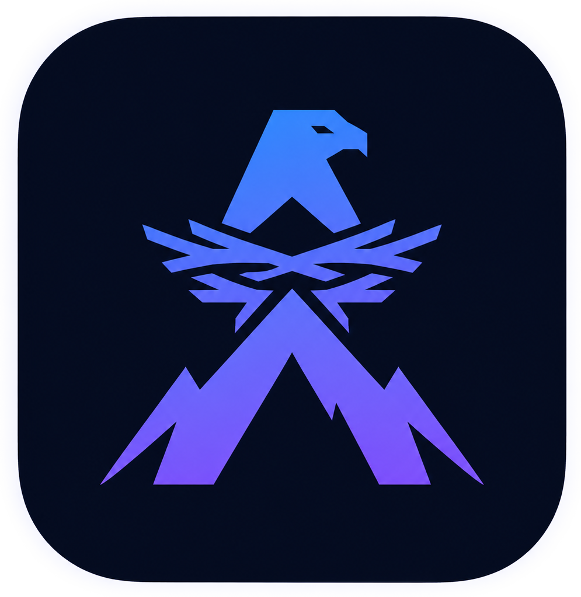
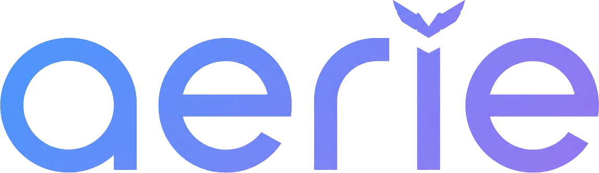

https://rss.nytimes.com/services/xml/rss/nyt/HomePage.xml · Hacker News: https://hnrss.org/frontpage · ESPN: https://www.espn.com/espn/rss/newsrss2json tier, which returns ~10 items per feed. Add a paid key (rss2json.com) to raise that cap; leave blank to stay on the free tier.DEMO_KEY by default, which is rate-limited (~30 requests/hour). Add your own free key for higher limits.get a key ↗platform.deepseek.com), OpenAI (platform.openai.com), Anthropic (console.anthropic.com). Each feed = 1 call per refresh, cached for the minutes above.https://api.allorigins.win/raw?url= or https://api.codetabs.com/v1/proxy/?quest=